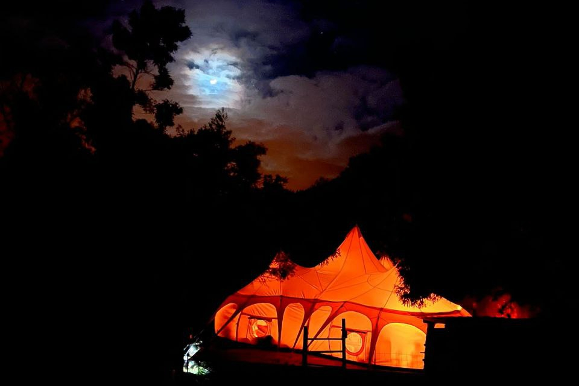
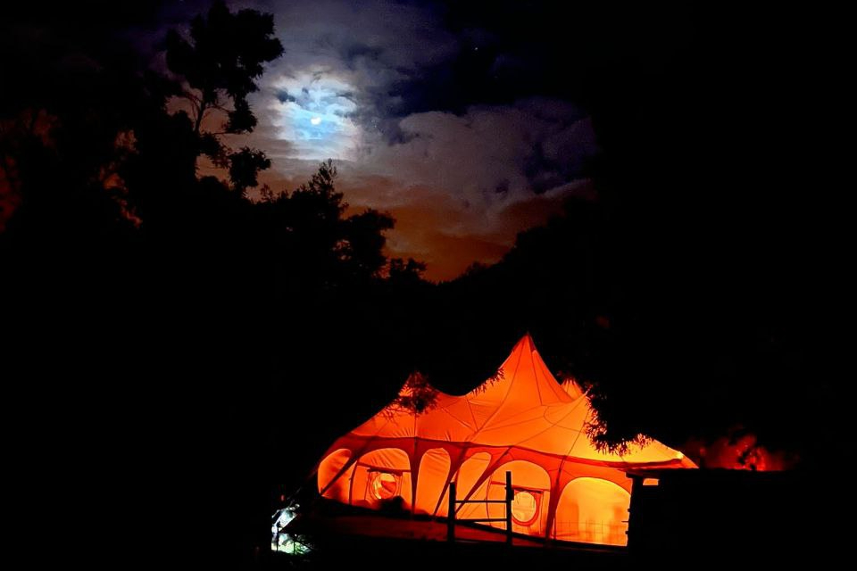

Wer die Grundlage der menschlichen Gesundheit verstehen will muss sich zu allererst mit der Beschaffenheit der landwirtschaftlichen Böden auseinandersetzen. Der Mensch besteht aus über 80 Mineralien, Metallen und Spurenelementen und ist auf lange Sicht darauf angewiesen diese in Form von vollwertigen Nahrungsmitteln zu sich zu nehmen um vollständig funktionierend und gesund im Leben voranzuschreiten. Mit einen Blick auf die Bodenbeschaffenheit eines Landes kann man Rückschlüsse ziehen und Prognosen zur Gesundheit der Bevölkerung machen.

Neben den Mineralien spielt auch die Anordnung der Pflanzen eine wesentliche Rolle. In einer richtigen Mischkultur gibt es zur genüge Pflanzen die für den Menschen nicht essbar sind, über diese freuen sich dann eine Vielzahl von Insekten, Vögeln, Kleintieren, Bakterien und andere Mikroorganismen. Wenn wir das gesamte Leben als ein "Miteinander und Füreinander" betrachten, dann begreifen wir dass ein Teil "unserer" Nahrung den Tieren zusteht.

Schliesslich dringen wir in ihren Gebieten ein und beanspruchen sie für uns. Die Natur gibt genug für Alle und zur Erinnerung: Die Natur braucht den Menschen nicht. Ein weiterer wesentlicher Vorteil bei einer hohen Diversität an Pflanzen ist die Ausprägung der sekundären Pflanzenstoffe. Damit eine Pflanze sich gegen Andere behaupten kann, muss sie stark sein und sie muss sich vor Fressfeinden schützen. Dies geschieht mit sekundären Pflanzenstoffen. Viele dieser Stoffe bringen den Menschen gesundheitliche Vorteile, vor allem wenn es um die Prävention und Erhaltung der Gesundheit geht. In Laboren wird sehr viel an den sekundären Pflanzenstoffen geforscht und trotzdem ist aufgrund der vielzahl an Pflanzen immer noch sehr wenig bekannt und noch viel weniger über die synergetische Wirkung beim Kombinieren der Wirkstoffe. Die Natur belohnt Vielfalt und Kooperation. Der Mensch bringt beim Kompostieren den Boden zum Leben indem er Vielfalt bei den Mikroorganismen fördert und somit wie eine "Armee" hat die für ihn arbeitet; ähnlich wie bei der gesunden Darmflora. Je mehr der Mensch Tiere auf sein Grundstück einlädt, desto mehr geben diese als Dünger in Form von Exkrementen wieder zurück. Der große Kreislauf; Alles hängt zusammen.

Unsere Superadobe Dome wurden aus einem Kalk, Sand, Kiesgemisch gefertig und sind darauf ausgelegt sehr lange zu halten und ein gesundes Raumklima zu gewährleisten.

Auf Madeira ist es ab einer bestimmten Meereshöhe sehr herausfordernd mit der hohen Luftfeuchtigkeit umzugehen und Schimmelbildung in Gebäuden zu vermeiden. Dank des hohen PH Wertes von Kalk, ist dieser dem Zement vorzuziehen. Des weiteren ist das Kalkgemisch atmungsaktiv und haltet auch viele Insekten von den Innenräumen ab. Früher wurde bereits auf der Insel mit Kalk gebaut und die "guten" Häuser wurden "aus Kalk und Stein" beschrieben. Im Sommer bleiben die Bauten dank des Kalks frisch, es fühlt sich wie klimatisiert an und im Winter sorgen Holzöfen für eine kuschelige Wärme. Die Wände speichern die Wärme und geben diese langsam wieder ab. Durch die runde Bauweise bleibt die Wärme hauptsächlich in den Zimmern mit den Öfen und sorgt dadurch für einen angenehmen Temperaturuntschied zu den Schlafräumen, wo eine etwas niedrigere Temperatur erwünscht ist.
Da der Name der Insel übersetzt Holz bedeutet wollten wir diesem Thema mehr Beachtung schenken und sind in Pioniersarbeit dabei dieses Thema zu erkunden. 100% natürlich, ohne künstlichen Dämmstoffen, giftigen Klebstoffen oder anderen Materialen welche die Menschliche Gesundheit über kurz oder lang beeinträchtigen.

Wir sehen Gesundheit in den 3 Bereichen Körper, Geist und Seele. Diese sind untrennbar miteinander verbunden. Unsere Körper können wir mit unseren Augen sehen und mit den Händen erfassen, wir stützen uns dabei auf unsere Sinneswahrnehmung. Bei dem Geist wird dies schon schwieriger da dies über eine ausersinnliche Wahrnehmung erfolgt. Als Kinder verfügen wir über die Fähigkeit Farben um unseren Körper zu sehen und uns selbst als Teil des Ganzen zu sehen. Sobald uns "Ich" und "Du" gelernt wird befinden wir uns bereits in der Wahrnehumg einer Trennung. Das Sehen der Farben um den Körper (Aura) verlernen die meisten Menschen, da unsere Sinne in der "modernen" Welt extrem geflutet und überreizt werden. Wir sollten uns bewusst werden dass es nicht bedeutet dass es etwas nicht gibt weil wir es nicht sehen können wie z.B Radiowellen, Strahlungen oder Liebe. Rudolf Steiner war der Meinung dass es keine Geisteskrankheiten gibt, da der Geist niemals krank sein kann. Sehr wohl kann es sein dass sich ein Geist in dem gegebenen Körper nicht richtig entfalten und entwickeln kann. Nur in einem gesunden Körper kann ein gesunder Geist wohnen, das hatte der römische Dichter Juvenal bereits vor ca. 2000 Jahren erkannt. Wenn dem Menschen Nährstoffe fehlen ist er zudem anfälliger auf Parasiten, welche ihre eingenen Ziele im Körper verfolgen und somit auch verhindern dass der Geist sich frei entwickeln kann. Parasiten können den Menschen Gefühlsmäsig steuern und zu Handlungen bewegen die er in Parasitenfreien Zustand nicht ausführen würde, siehe Toxoplasma Gondii. Unsere Seele ist im Gegensatz zu unserem Physischen Körper unsterblich und strebt nach Erfahungen in dieser niedersten Ebene, der physischen Manifestation. Eine Seele ist Energie und Energie kann niemals zerstört oder erzeugt werden, sie kann lediglich transformiert werden.

Um Transformation geht es auch bei der emotionalen Heilung. Jeder Mensch ist nur im Stande ein gewisses Mass an Emotionen zu verarbeiten, der Rest wir in unseren Emotionalen Körper festgehalten und abgespeichert. Wieviele und welche Emotionen wir verarbeiten können ist von Mensch zu Mensch verschieden. Jeder ist individuell, hat seine eigene Geschichte und die Fähigkeit mit Verletzungen umzugehen. Im Laufe des Lebens können wir lernen mit unseren Emotionen umzugehen und diese zu verarbeiten. Unabhängig davon ob wir uns dessen bewusst sind oder nicht: es wirkt das Prinzip dass Gleiches Gleiches anzieht. Bei belastenden Emotionen ziehen wir mehr von den selben, schmerzhaften Erfahrungen an, wir häufen Energie in Störfeldern an, belasten unsere Organe und verkomplizieren unsere Leben indem wir nicht unseren Seelenweg mit Freude und ohne Einschränkungen beschreiten können. In den traditionellen Medizinlehren verschiedenster Kulturen wird auf den Zusammenhang von Organsystemen und Emotionen hingewiesen. Der Zeitpunkt an dem wir diesen wesentlichen Dingen die angebrachte Bedeutung schenken ist (wieder) gekommen. Lasst uns frei sein von Konditionierungen und den schmerzbehafteten Geschichten die wir uns über uns selbst erzählen. Wenn ich immer das tue was ich bereits kenne, werde ich immer der Mensch sein der ich bereits bin. Neue Wege führen zu neuen Zielen.
Um Kinder und Jugendliche gut fürs Leben vorzubereiten haben wir die Barefoot Life Architekt School gegründet.

In mitten der Natur werden Workshops rund um das Thema Holzbearbeitung, Ernähung, Landwirtschaft, Holitische Gesundheit, Manifestation, Internet, Technik, Musik, Kunst und vieles mehr in verschiedenen Sprachen angeboten.

Für weitere Informationen besuchen Sie bitte die Internetseite von Jardim da Cura: LINK
Hier können Sie unsere Konzeptmappe der Barefoot School runterladen: PDF


 
